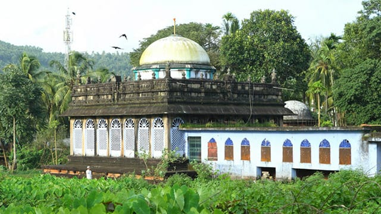
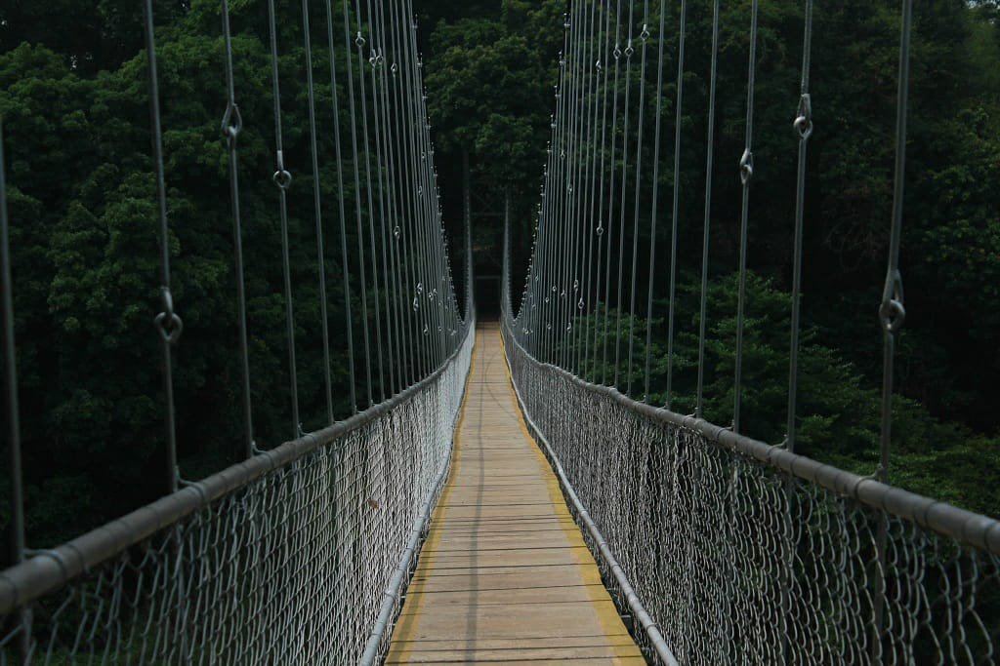

1 / 3

malappuram
2 / 3

3 / 3

Year of formation : 1969, June 16 Major Rivers : Bharatapuzha, Kadalundipuzha Most populous district District with highest growth rate. District with more rural population District with lowest per capital income. The district with the highest number of Panchayats. Akshaya Project (computer literacy project) was firstly introduced in Malappuram (Pallickal Panchayat) India's only one Govt. Ayurvedic mental Hospital is at Kottakal. First bio resource national park is in Nilambur. Wagon Tragedy memorial Hall is in Tirur. Kudumbasree was inaugurated at 17th May 1998 in Malappuram. Kadalundi Bird Sanctuary is in Malapuram. First Railway line in Kerala - Tirur and Baypore (1861) Mamankam was held at the Thirunavaya Temple, on the banks of river Bharathapuzha. The district with largest number of local self government institutions in Kerala. Thirunavaya on the bank of the river Bharatapuzha where Mamankam was held, Ponnani (port), Nilambur (Teak plantation), Valluvanad (the centre of Malabar rebellion of 1921), Karippur (International Airport), Thenzhipalam (seat of University of Calicut), Thiroor (Birth place of Ezhuthachan) and Kottakkal Aryavaidyasala are in this district (founded by PS Varier, and the only Ayurveda mental hospital in Kerala) The first teak plantation of the world is at Nilambur. The oldest teak in the world is at Kanoli plot in Nilambur. Poonthanam Namboodiri was born in Keezhattoor near Perunthalmanna. Malappuram district has the largest number of computer literates in Kerala. The first fully computer literacy village is Chamravattam, Thrippangode Panchayat, Malappuram district. Ponnani is called the Mecca of Kerala